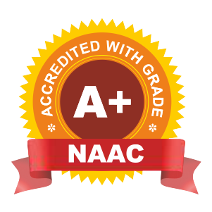
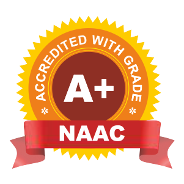
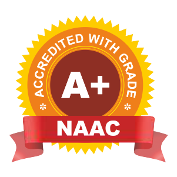
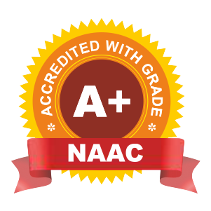

Accreditation & Recognition
 



Established in 1983, the Civil Engineering Department at Walchand Institute of Technology, Solapur, offers B.Tech with Honors in Infrastructure or Sustainability Engineering, a Masters in Civil-Structural Engineering, and a Ph.D. program. Renowned faculty members contribute expertise in various fields.

Founded in 1985, this department provides a CSE undergraduate program and initiated a postgraduate course in 2009-10. It hosts a recognized research lab for doctoral candidates and boasts modern computer labs with advanced equipment. The labs are equipped with terminals, scanners, printers, and CD/DVD capabilities.
Established in 1983, the Electronics Engineering Department offers both undergraduate and postgraduate programs. It features a recognized research lab for doctoral studies and focuses on nurturing students across six streams including Foundation of Electronics, Digital Electronics, and Telecommunication.

Established in 1983, the Civil Engineering Department at Walchand Institute of Technology, Solapur, offers B.Tech with Honors in Infrastructure or Sustainability Engineering, a Masters in Civil-Structural Engineering, and a Ph.D. program. Renowned faculty members contribute expertise in various fields.

Founded in 1985, this department provides a CSE undergraduate program and initiated a postgraduate course in 2009-10. It hosts a recognized research lab for doctoral candidates and boasts modern computer labs with advanced equipment. The labs are equipped with terminals, scanners, printers, and CD/DVD capabilities.
.png)
Established in 1983, the Electronics Engineering Department offers both undergraduate and postgraduate programs. It features a recognized research lab for doctoral studies and focuses on nurturing students across six streams including Foundation of Electronics, Digital Electronics, and Telecommunication.
Walchand Institute of Technology, one of the pioneering self financed Institution in engineering education & research was established in 1983 by SAPDJ Pathshala Trust ( Estb. 1885).
Our enhanced curriculum imparts cutting-edge skills to help students ast-track their career growth in today's uncertain environment. Develop crucial skills like global intelligence, creativity & innovation, decision-making.
Whether you're looking to advance your career in India or abroad, change your career path or start your own business, our Professional Readiness Program, multinational career services
For recent happenings at WIT Solapur, visit our FB page ...Read More